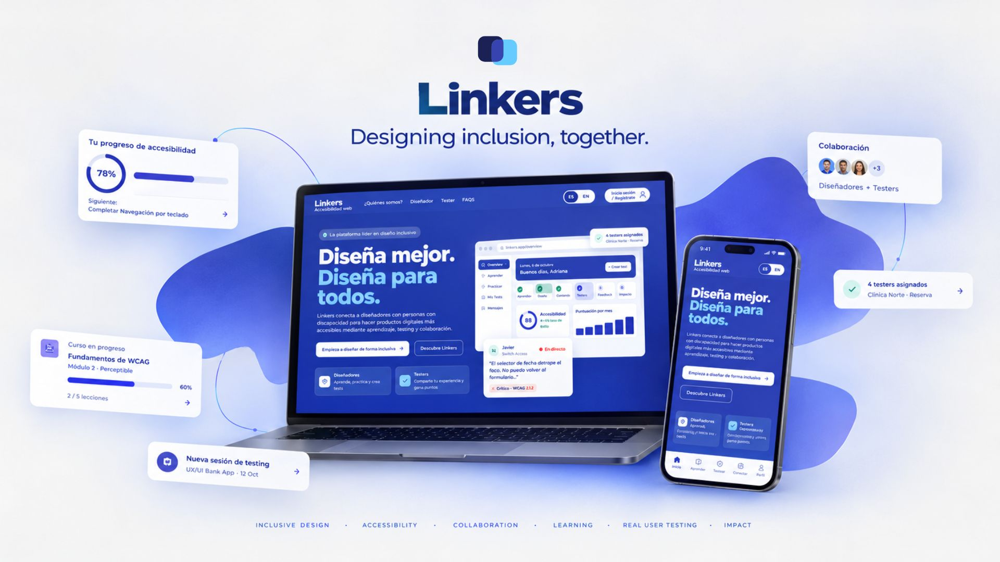
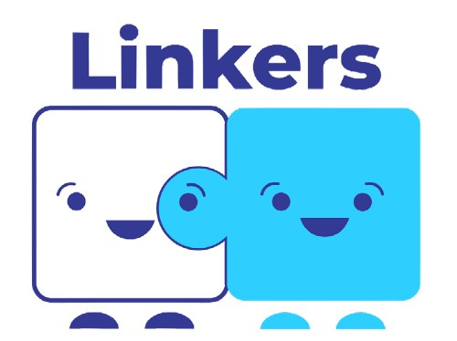
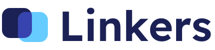

Aprovechar la diversidad
Convertir la experiencia de las personas con discapacidad en una parte del proceso de diseño, no en una revisión final.
Trabajo Fin de Máster · UDIT
La pieza faltante en el Diseño Inclusivo: una plataforma que conecta diseñadores con testers con discapacidad para integrar la accesibilidad desde las primeras fases del diseño.

01El reto
El Trabajo Fin de Máster planteaba diseñar una experiencia bancaria omnicanal accesible que mejorara de forma real la vida de las personas con discapacidad.
Al investigar, el problema dejó de estar en el producto bancario y pasó al proceso de diseño: la accesibilidad suele llegar al final, como una auditoría, y casi nunca con la participación de las personas a las que afecta.
“Accessible design is good design.”
02Objetivos
Convertir la experiencia de las personas con discapacidad en una parte del proceso de diseño, no en una revisión final.
Que las organizaciones la entiendan como una responsabilidad compartida entre todos los equipos.
Ayudar a comprender y aplicar WCAG y la normativa europea y española sin necesidad de ser experto.
Además, el proyecto buscaba validar la importancia de testear con usuarios con discapacidad y despertar interés por aprender accesibilidad web.
03Investigación
Personas en el mundo viven con una discapacidad importante.
Fuente: Organización Mundial de la SaludLa accesibilidad se aborda desde tres frentes: las normativas (WCAG, la European Accessibility Act, aplicable desde junio de 2025 y traspuesta en España por la Ley 11/2023), las tecnologías de asistencia (lectores de pantalla, switch, control por voz) y los principios del Diseño Universal.
WCAG se organiza en cuatro principios:
04Entrevistas
Entrevisté a profesionales de ING España y de la Fundación Randstad para entender qué frena la accesibilidad dentro de una organización real.
Deberíamos tener contratadas 34 personas con discapacidad, pero actualmente solo tenemos cuatro por la dificultad de encontrar perfiles que se ajusten con los requisitos.”
“La European Accessibility Act exige que todos los productos digitales sean accesibles, pero no define en detalle qué significa esto a nivel técnico. Para ello se apoya en la WCAG.”
“Uno de los mayores desafíos es mantener un lenguaje claro y comprensible, especialmente en un entorno bancario lleno de términos técnicos.”
“La Fundación Randstad utiliza datos del INE: en España hay 3.300.000 personas con certificado de discapacidad, de las cuales 1.900.000 están en edad laboral. La tasa de actividad es del 35% y la de desempleo del 21%.”
05Insights
El modelo 100% remoto de ING elimina barreras físicas y reduce el absentismo; las reformas de oficinas siguen limitadas por presupuesto.
Pese a la obligación legal de contratar personas con discapacidad, los requisitos de formación dificultan cubrirla.
Funcionan mejor las campañas guiadas por la opinión de los empleados que la formación obligatoria.
Los programas sobre brecha digital y por sector mejoran la empleabilidad.
La European Accessibility Act exige al menos el nivel AA de WCAG. Los equipos conocen la norma; les falta práctica.
No hay un único experto: desarrollo, UX y UI deben contribuir.
06Oportunidad
La investigación señaló una oportunidad en la intersección de tres frentes: cumplir la normativa y evitar sanciones, adquirir y aplicar conocimientos de accesibilidad y diseñar productos más accesibles que mejoren la vida de las personas.
¿Cómo podríamos incluir en el desarrollo de productos digitales una colaboración efectiva entre diseñadores y usuarios con discapacidad, garantizando que las necesidades y perspectivas de ambos grupos se integren y se reflejen en el producto final?
07Ideación y benchmark
La sesión de ideación dejó dos direcciones: incluir perfiles con discapacidad en la investigación y el diseño, y formar a todos los equipos en accesibilidad.
Después comparé las herramientas existentes según dos criterios: si permiten testear con usuarios reales con discapacidad y si favorecen la colaboración entre diseñador y tester.
Revisan el código o la interfaz de forma automática, pero ninguna acerca al diseñador a las personas que realmente usarán el producto.
Ninguna solución une a diseñadores y personas con discapacidad.
08Concepto
Linkers es una plataforma web que conecta a diseñadores con testers con experiencia vivida de discapacidad. Los diseñadores aportan oficio; los testers, experiencia. La plataforma los une durante todo el ciclo de producto.
8 cursos cortos basados en WCAG 2.2 (menos de 15 minutos por lección) con ejemplos interactivos y ejercicios prácticos.
Pega un enlace de Figma o sube una pantalla y recibe un informe en lenguaje de diseño, con el criterio WCAG y la solución.
Sesiones remotas con tareas, cronómetro en directo y notas compartidas, con testers elegidos por especialidad, dispositivo y disponibilidad.
Un panel de feedback con hallazgos y puntuaciones en el tiempo, para enseñar el impacto en tu portfolio.
Los recorridos se encuentran en el test. El check automático detecta aproximadamente un tercio de los problemas; el resto lo encuentran las personas, por eso Linkers nunca lo presenta como sustituto del testing real.
09Modelo y confianza
Ganan entre 5 y 10 puntos por test y pueden canjearlos a partir de 30 puntos. La equivalencia es ilustrativa, no una promesa de canje.
El primer curso y el primer check están incluidos. Después, Premium a 5,99 €/mes, solo para estudiantes verificados.
Quien se registra como tester sube su certificado de discapacidad y su DNI. Se tratan según el RGPD y se eliminan tras la verificación.
Los perfiles de testers describen lo que la persona hace y sabe, nunca solo un diagnóstico.
Los datos del prototipo (número de testers, puntuaciones, proyectos de ejemplo como “Clínica Norte”) son ilustrativos.
10Identidad y sistema
El nombre “Linkers” evoca puentes y conexiones. La identidad se construyó sobre dos piezas de rompecabezas: la del diseñador, que aporta creatividad y técnica pero queda incompleta, y la del tester, que aporta la perspectiva indispensable. Juntas, encajan. Su “hueco” también es un elemento de interfaz: borde discontinuo y radio de 10 px.
#37419E#1F2160#8EC5F5#F6C445Sky y Bulb nunca llevan texto blanco: el blanco sobre Sky da 1,8:1 y no cumple. Se usan como relleno con texto Navy, o en mascotas e ilustraciones.
Montserrat para todo el producto. El texto necesita 4,5:1 de contraste y el de cuerpo nunca baja de 16 px ni de peso 500.
Anillo cobalto de 3 px con separación blanca y contraste 7:1 en todo componente interactivo. Cada uno tiene siete estados.
La severidad combina siempre forma, palabra y color. Iconos de 24 px con trazo de 1,8.
Perfiles de accesibilidad: texto de 16 a 19 px, fuente Atkinson Hyperlegible, alto contraste y sin animaciones.
Tras el TFM, la identidad evoluciona para un uso profesional. Las dos piezas de rompecabezas se convierten en dos cuadrados redondeados que se superponen: las piezas ya eran cuadradas, así que se conservan su forma y sus colores y solo desaparecen las caras. Donde se encuentran nace un tercer color: lo que diseñadores y testers crean juntos.


La pieza con hueco del TFM, ahora sin cara. Aporta la técnica y la creatividad.
La pieza celeste del TFM. Aporta la experiencia real, la perspectiva que ninguna auditoría sustituye.
El producto accesible que crean juntos. Es el único lugar del símbolo donde aparece el azul principal de la marca.
La evolución mantiene los colores del TFM y su papel, lleva los titulares a Lexend (diseñada para mejorar la fluidez lectora) y el texto a Atkinson Hyperlegible (diseñada para baja visión), y repite el cuadrado redondeado en botones, etiquetas y tarjetas.

11Testeo
Construí un prototipo interactivo en Figma que simulaba la experiencia real: registro, navegación por secciones y formularios de test. Con un guion breve de preguntas por tarea, lo probé con cuatro diseñadores UX/UI.
Registro cómodo, pero faltaba una barra de progreso. Pide un botón directo entre píldoras de contenido y más claridad sobre cómo y dónde se reciben los incentivos.
Sugiere preguntar por la experiencia previa en accesibilidad, permitir elegir varios tipos de discapacidad y explicar mejor por qué se piden datos sensibles.
Pide diferenciar los roles “diseñador” y “tester” desde el inicio, dividir el formulario de test en pasos claros y sumar gamificación (niveles, progreso visual).
Recomienda fondo blanco para los TIPS (competían con el botón principal), aclarar la diferencia entre “aprender” y “estudiar” e incluir un vídeo real y fotos de perfil.
12Prototipo final
“Diseñador” y “tester” se distinguen desde la pantalla principal, con cuatro puertas de entrada.
Selección de perfil en dos pasos, indicador de progreso y explicación de por qué se piden los datos.
Cursos, ejercicios, apuntes y un perfil de accesibilidad configurable por persona.
El test se configura por categoría, número de testers, plazo y horarios, con consejos para una sesión efectiva.
Pruébalo tú: es el prototipo interactivo final. Ábrelo a pantalla completa para ver la experiencia completa en escritorio, tablet y móvil.
13Conclusiones
Linkers demostró que es viable integrar a diseñadores y personas con discapacidad en el desarrollo de productos digitales. Las empresas obtienen productos más inclusivos y reducen el riesgo legal; los diseñadores cumplen la norma y mejoran su trabajo; los testers acceden a mejores productos y son reconocidos por su aporte.
Una limitación importante: no pude testear directamente con usuarios con discapacidad por la dificultad de localizar perfiles, así que el impacto real en ese grupo queda por validar.
14Línea de futuro
Feedback continuo, tutoriales interactivos y un sistema de recompensas más robusto para los testers.
Comunidad más grande, alianzas con organizaciones de accesibilidad, versión móvil y certificación para diseñadores.
Academia virtual de accesibilidad, personalización con IA, realidad aumentada para testeo inmersivo e influencia en políticas públicas.
15Aprendizajes
Este TFM cambió mi forma de entender la accesibilidad: dejó de ser una lista de criterios para ser una conversación con personas. Hablar con diseñadores y profesionales de ING me ayudó a entender, con empatía, los retos de este sector.
Aprendí a valorar la colaboración interdisciplinar y la co-creación como motores de productos realmente inclusivos, y reforzó mi compromiso con la equidad en el diseño digital.
Si este proyecto te da una idea de cómo trabajo, me encantaría contarte más.
Contactar